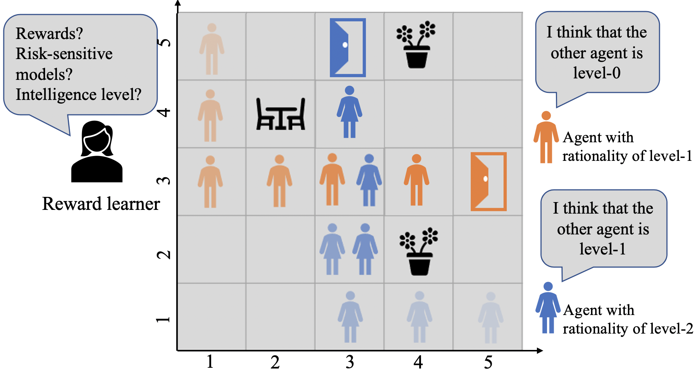
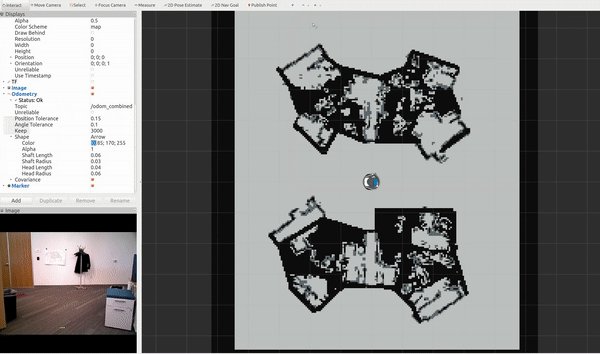
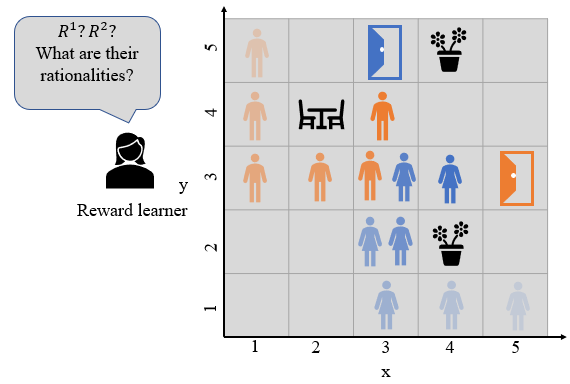
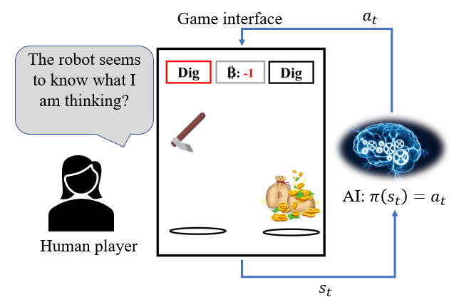
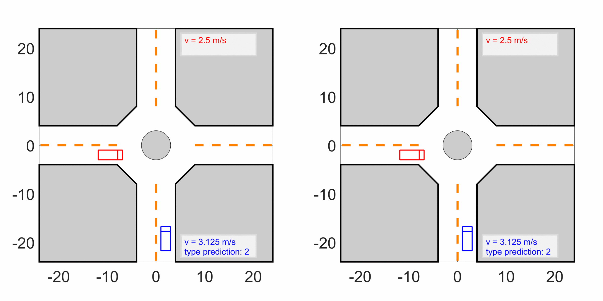
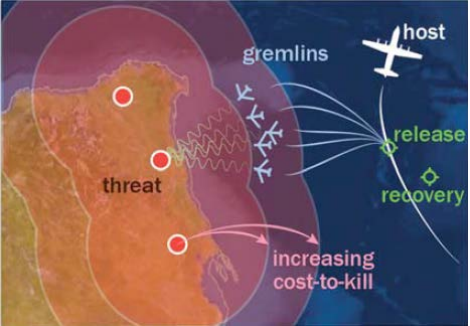
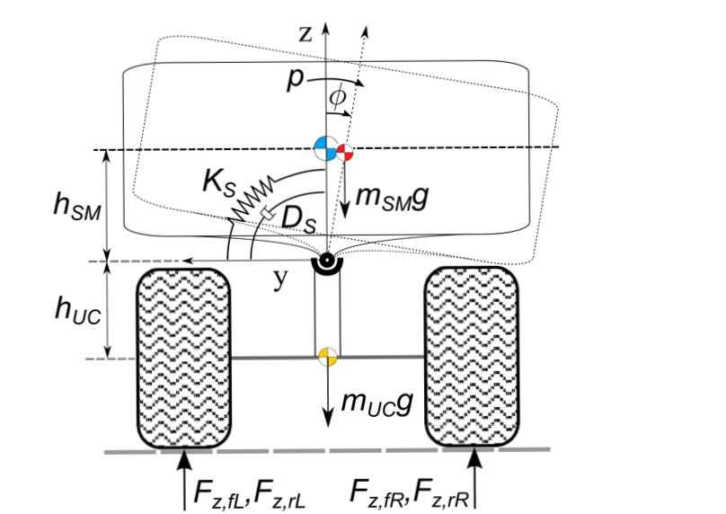

Publications

Bounded risk-sensitive Markov Game and its inverse reward learning problem
Preprint
Human-robot interaction Reward learning
[Key insight: Classical game-theoretic approaches for multi-agent systems in both the forward policy learning/design problem and the inverse reward learning problem often make strong rationality assumptions: agents are risk-neutral to all uncertainties and have unlimited computation resources to infer others’ actions and solve for the optimal actions that maximize their expected rewards. Such assumptions, however, mismatch with substantial observations of humans’ behaviors such as satisficing with sub-optimal actions, risk-seeking, and loss-aversion decisions.]
we investigate the problem of bounded risk-sensitive Markov Game (BRSMG) and its inverse reward learning problem. Instead of assuming agents perform infinite levels of reasoning over possible actions of others, in BRSMG, we consider the influence of finite-level intelligence. Instead of assuming agents maximize their expected rewards (a risk-neutral measure), in BRSMG, we consider the impact of risk-sensitive measures such as the cumulative prospect theory. Convergence proofs of BRSMG for both the forward policy learning and inverse reward learning are provided.

Curious autonomous robots in uncertain environments
Preprint
Human-robot interaction Localization
[Key insight: Giving an agent the ability to be curious about its environment could improve its understanding and potentially aid in future planning.]
We present a novel algorithm that provides a goal oriented agent with artificial curiosity, enabling the agent to explore as needed to better achieve its goal. The algorithm uses model-based open-loop planning which lends itself to use on robotic platforms where safety is critical. We demonstrate how the proposed framework can be applied to enable autonomous vehicles to effectively negotiate traffic merges, and to improve the navigation of a Fetch robot under pose uncertainty.

Inverse reinforcement learning in Markov Games under bounded rationality
Preprint
Reward learning
[Key insight: Instead of achieving an equilibrium solution concept with infinite computations, human's behaviors rather converge to a non-equilibrium solution concept with bounded computation requirement. Such bounded rationality should be accounted in the human reward learning problems.]
In this paper, we explicitly consider the influence from such bounded rationality, and developed a multi-agent IRL framework based on a non-equilibrium solution concept.
Controller mode and reference governor for constraint and failure management in autonomous vehicle platooning
Conference on Control Technology and Applications, 2020
Model predictive control Multi-mode control
[Key insight: Autonomous vehicle control systems must have the abilities to handle unanticipated/failure situations during operation.]
This paper proposes a controller mode and reference governor (CMRG) scheme for constraint and failure management in vehicle platoons. The CMRG is an add-on supervisor for multi-mode controlled systems that monitors and, when necessary, adjusts the control modes and reference inputs to enforce constraints. We show by simulations that with the application of CMRG, safety constraints can be satisfactorily enforced and sensor and/or actuator degradations/failures can be managed in vehicle platoon systems.

Beating humans in a penny-matching game by leveraging cognitive hierarchy theory and Bayesian learning
American Control Conference,
2020
Artificial Intelligence Cognitive science
[Key insight: Probabilistic human models inspired cognitive-neuron science may capture some crucial features in human reasoning.]
We consider a repeated penny-matching game between a human player and an AI player. We exploit cognitive hierarchy theory and Bayesian learning techniques to continually evolve a model for predicting human player decisions. The AI player makes decisions according to the model predictions to pursue the best chance of winning.

Game-theoretic modeling of driver social interactions
IEEE Transactions on Intelligent
Transportation Systems, 2019, under review
Human-robot interaction Game theory
[Key insight: Autonomous vehicle planning systems need extensive testing, where the interactions among autonomous/human-driven vehicles should be represented.]
We propose a game-theoretic approach to modeling vehicle interactions for urban traffic environments. We develop traffic models with heterogeneous and interactive vehicles based on our proposed approach, and use them for virtual testing, evaluation, and calibration of autonomous vehicle control systems.

Autonomous vehicle (blue) interacts with
different human-driven vehicles (left: aggressive;
right: cautious).
Adaptive game-theoretic decision-making for autonomous vehicle control at roundabouts
IEEE Conference on Decision and
Control (CDC), 2018
Human-robot interaction Game theory
[Key insight: Non-equilibrium solution concept of game-theoretic model can approximate human driver's bounded rationality and can be exploited to develop decision-making algorithms for self-driving cars.]
Inspired by human cognitive models, we proposed a novel algorithm that uniquely integrates a cognitive game-theoretic formalism and receding-horizon optimization to model human-driver decision-making. By exploiting the proposed driver model, we developed an interaction-aware decision-making algorithm that enables a self-driving car to safely and effectively interact with a human-driven car.

Reference governor strategies for vehicle rollover avoidance
IEEE Transactions on Control Systems
Technology, 2017
Model predictive control
Mini abstract:This paper addresses the problem of vehicle rollover avoidance using reference governors (RGs) applied to modify the driver steering input in vehicles with an active steering system. Several RG designs are presented and tested with a detailed nonlinear simulation model.

Path planning for information collection in contested environments using marsupial systems
IEEE International Conference on
Unmanned Aircraft Systems, 2017
Model predictive control
Mini abstract: This paper addresses a path planning problem where a marsupial system is assigned to collect a specified amount of information about a set of objects of interest while minimizing the likelihood of detection by an opponent’s sensor. A marsupial system consists of aircraft (agents) with different capabilities. The agents are characterized by their velocities, information collection capabilities, and their effectiveness at remaining undetected.

Coordinated control of active steering and differential braking using extended command governor for rollover avoidance
ASME Dynamic Systems and Control
Conference, 2017
Model predictive control
Mini abstract: This paper develops an Extended Command Governor (ECG) for coordinated control of active steering and differential braking to prevent a vehicle from rolling over when undergoing aggressive maneuvers. The ECG modifies commands to well designed closed-loop systems when necessary to prevent constraint violations. In this paper, the ECG is applied to a nonlinear vehicle model to maintain the vehicle in a safe state.